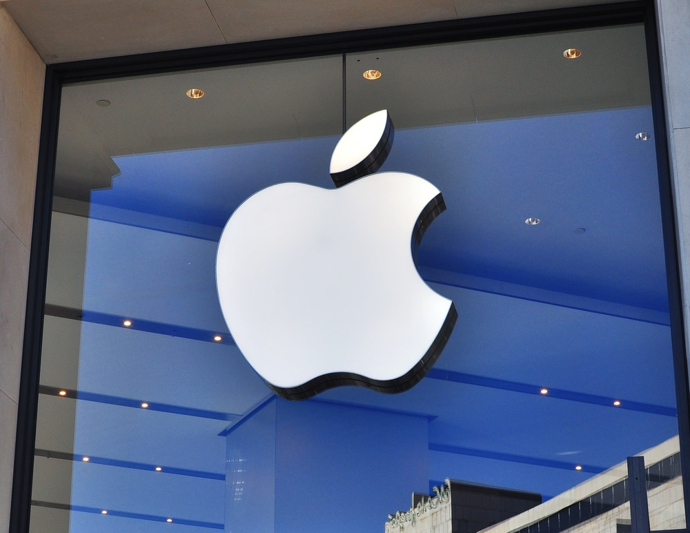
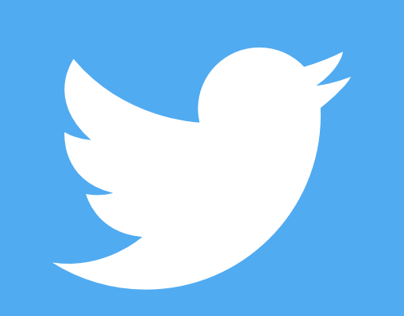

Apple e Samsung prosperam em meio a mercado em queda
O mercado de smartphones como um todo está em dificuldades. Vivo, Xiaomi e Oppo experimentam quedas acentuadas, mas Samsung e Apple mantêm suas vendas apesar da crise. Dito isso, não estamos dizendo que as líderes de mercado cresceram em vendas, mas mantiveram seus números mesmo em um cenário de dificuldade. O mercado de smartphones tropeçou um pouco em 2022, caindo 11%. Pelo menos é o que afirma a empresa de pesquisa Canalys, ao rastrear as remessas de smartphones dos fabricantes, um indicador confiável do volume de vendas global. Eles afirmam que 1,2 bilhão de telefones foram vendidos globalmente.
Ler mais
Fim da linha! México proíbe startup de geoengenharia solar
Uma pequena startup mexicana travou uma batalha com o governo para poder operar no país. A empresa trabalha com geoengenharia solar, técnica que tem como objetivo refletir os raios quentes do Sol e resfriar o que estiver embaixo. No entanto, questões ambientais estão tornando esse processo um pouco complicado.
A tecnologia da empresa chamada Make Sunsets utiliza balões para colocar na estratosfera partículas de dióxido de enxofre para refletir a luz solar. O experimento chamou a atenção do Ministério do Meio Ambiente e Recursos Naturais do México, que não gostou da ideia.
Ler mais

Twitter: saiba como vão ficar os tweets com 4 mil caracteres
Por muitos anos o Twitter foi conhecido como uma rede social “sucinta”, em oposição aos textões do Facebook, tudo no passarinho azul deveria ter no máximo 180 caracteres (ou uma infinidade se você criasse threads). No entanto, já tem alguns anos que esse limite foi quebrado para 280 e agora, nas mãos de Elon Musk, a rede social se prepara para um novo (e enorme) salto, com 4 mil caracteres.
Uma das preocupações dos usuários é que isso pode mudar de forma profunda o visual e o layout do Twitter, mas talvez as coisas não sejam tão extremas. Quer uma amostra? O programador e especialista em engenharia reversa Alessandro Paluzzi publicou um print de uma versão de testes que mostra a plataforma exibindo textos maiores, além dos 280 caracteres que conseguem ser mostrados na íntegra.
Ler mais